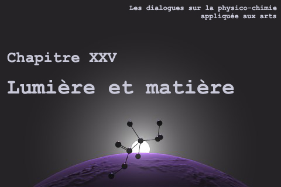
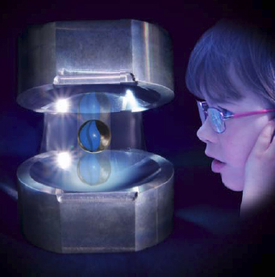

| |
|
|

4. Lumière, chats et
miroirs |
dial dial
dial
|
Cette page qui fait partie du
chapitre XXV est une discussion
entre Charles, physicien « opticien » au CNRS, et Emmanuel,
candide.
|
|
Emmanuel :
Nous venons de discuter avec Jean-Louis et Jean-Claude d'une
particularité du photon qui m'a fait penser à une avancée apparemment
très importante due à Serge Haroche et son équipe qui leur ont valu la
médaille d'or du CNRS.
Charles, vous êtes physicien au CNRS, vous êtes ce que l'on nomme un
« opticien », pouvez-vous nous en dire un peu plus sur cette « boîte à
photons » ?
Charles : D'abord quelques rappels pour
resituer les enjeux.
La mécanique quantique s'applique dans le cas général à des échelles
très petites (de l'ordre au plus de la centaine de nm). La mécanique
classique s'applique à notre échelle. Que se passe-t-il entre les deux ?
Sachant que d'étranges propriétés inexistantes à notre échelle ont été
observées et théorisées à l'échelle atomique :
* incertitude :
on ne peut pas connaître à la fois la position et la vitesse
d'une particule alors que pour une voiture on peut connaître les deux
(GPS + vélocimétrie)
* effet tunnel : une particule a une
probabilité non nulle de passer à travers un mur (une barrière de
potentiel) ce qui n'est pas notre cas.
Voir aussi :
développements en vidéo interactive sur le site de l'université du Mans
et
autres liens
* non localité : une particule peut ne pas
être localisée. On sait créer des paires de photons ayant une
description unique (fonction d'onde unique) qui s'éloignent l'un de
l'autre et on ne sait plus qui, quoi est où. Cet effet est en jeu dans
la télétransportation.
* intrication : un atome unique peut être
préparé dans deux états d'énergie différents. Au moment d'une mesure
(influence de l'observateur qui, macroscopique, fait partie de
l'expérience quantique) l'état devient unique et bien défini.
Il est de
la plus haute importance pour la physique actuelle d'essayer de
comprendre comment notre monde macroscopique peut-être construit sur le
monde quantique.
|
|
|
|
J'en viens à Serge Haroche. Il s'est
intéressé aux problèmes d'intrication en faisant de nombreuses
expériences d'interaction lumière-matière. Il a pour cela d'abord
travaillé sur les atomes de Rydberg. Les atomes de Rydberg
[liens externes] sont des atomes dont l'électron extérieur est dans un
état d'énergie très élevé (nombre quantique principal n = ± 80). À ces
énergies d'excitation la taille de l'atome (souvent un
alcalin, sodium ou rubidium)
est de l'ordre du centimètre. On voit bien leur intérêt pour étudier le
passage de l'atomique à l'humain !
Emmanuel : Comment des électrons aussi
éloignés peuvent-ils ne pas se perdre ?
Charles : La durée de vie de tels atomes de
Rydberg n'est pas nécessairement très longue. Il suffit qu'ils durent
suffisamment longtemps (10 microsecondes par exemple) pour qu'on puisse
les utiliser dans une expérience.
À ces niveaux d'excitation une transition de l'électron entre deux
niveaux se fait à très faible changement d'énergie (micro-ondes).
|
|
Lire le
dossier de presse du CNRS |
|
Serge Haroche a construit ce que nous
appelons des cavités optiques
[liens externes]
d'une très grande finesse constituées d'une paire de miroirs, en niobium
refroidi à la température de l'hélium liquide, se faisant face et
tellement réfléchissants qu'une assemblée de photons peut s'y réfléchir
pendant des temps très longs. En plaçant un atome de Rydberg dans la
cavité, Serge Haroche a pu montrer qu'on pouvait « observer » l'état
d'un atome sans détruire de photon.

Observer un champ peut
figer son évolution
Visuel Cnrs © Michel Brune
/ LKB
À partir de ses travaux, ses
collègues et collaborateurs ont réalisé une démonstration de la boîte à
photon imaginée par Einstein et un déploiement expérimental de
l'expérience du chat de Schrödinger [lien
externe journal Nature sur le célèbre félin (en anglais) /
autres liens].
La boîte à photon a été utilisée par Einstein pour contester le principe
d'incertitude de Heisenberg
[liens externes].
|
|
Observer sans toucher |
|
Le chat de Schrödinger,
placé dans une boîte, est à la fois mort et vivant. Ceci est une
description allégorique d'un atome intriqué qui se trouve simultanément
dans deux états différents. La question est : pourquoi le chat ne
peut-il pas être dans deux états à la fois comme un atome ? La réponse :
parce que tout système interagit avec l'univers et avec lui-même.
Tout
état intriqué d'un atome ne peut être observé que si on limite ses
interactions avec l'univers, comme dans une cavité de Haroche par
exemple, car un tel état est très fragile et dès qu'un champ ou une
particule interagit avec lui, il retourne dans son état normal. Un atome
a peu de degrés de liberté et peut rester longtemps intriqué dans une
telle cavité. Un chat contient environ 1021 atomes qui interagissent
entre eux de sorte que même si on pouvait préparer un chat dans l'état
mort-vivant son temps de désintrication serait si court qu'on ne
pourrait pas l'observer.
La boîte nous empêche seulement de voir l'état du chat tant qu'on ne l'a
pas ouverte. On limite les interactions avec l'univers pour un atome
quand on le met dans une cavité, le truc avec le chat c'est que le fait
de le mettre dans une boîte ne change en rien les interactions de ses
atomes entre eux. L'univers de chaque atome du chat est constitué de
tous ses autres atomes. Encore autrement : un atome du chat peut être
mis dans un état intriqué et pour cet atome l'univers proche est
l'ensemble de ses autres atomes.
|
|
Superposition de destins |
|
Emmanuel :
Jean-Claude nous a appris au cours de ce
chapitre [Sommaire/article Une évanescence ?] qu'à proximité de la matière, en plus de la
composante « transverse » du champ électromagnétique il existe une
composante que l'on dit « évanescente »...
Charles : C'est elle qui permet l'effet tunnel.
Emmanuel : Outre le fait que la portée de cette composante soit vraiment
très petite (1nm), elle a une particularité : elle ne transmet pas
d'énergie et donc sans doute pas d'informations.
Charles : Elle ne transmet pas d'informations, cela est sûr.
Emmanuel : Nous en étions là lorsque j'ai entendu parler de la boîte à
photons de Serge Haroche, tout simplement à la radio, à l'occasion de la
remise de la Médaille d'or du CNRS.
Une journaliste expliquait que cet outil allait permettre d'étudier la
transition encore méconnue entre les états quantiques « intriqués » et
la décohérence qui nous ramène à la physique classique.
J'ai alors fait un rapprochement (sûrement candide mais c'est mon
rôle !) avec ce champ proche où coexistent un champ « évanescent » par
lequel aucune information n'est transmise et un autre champ par lequel
elle se transmet infiniment loin. Il est bien troublant que cette
coexistence se situe pour ainsi dire sur les lieux de la décohérence.
J'ai donc quelques questions : quel peut être le sens, le rôle ou la
cause d'un champ qui ne transmet pas d'informations ? Et au fond est-il
juste de dire qu'il n'en transmet pas, dans la mesure où son existence
est peut-être à elle seule une information au sens « ontique »
(1), non au
sens de la transmission spatiale et temporelle de quelque chose ?
Charles : Pour le champ évanescent, il est une mesure de probabilité de
présence d'une particule ou d'un photon à l'intérieur d'une barrière de
potentiel et en tant que tel il n'est pas propagatif et donc ne
« transporte » pas d'information.
À la sortie d'une barrière de
potentiel cette probabilité de présence d'une particule ou d'un photon
est très faible mais s'il y a beaucoup de particules qui arrivent sur la
barrière à chaque instant, une faible fraction d'entres elles vont se
retrouver de l'autre côté de la barrière sous la forme habituelle qui
peut à nouveau transporter de l'information/énergie.
Le rapprochement que vous avez fait tient simplement à ce que les deux
effets sont quantiques et se produisent donc à la même échelle du
nanomètre.
Emmanuel : Fascinant. Le champ évanescent mesure une probabilité
et pourtant il est réel, si le mot est adapté.
En l'occurrence, le cas envisagé par Jean-Claude est typiquement la
transmission d'une onde électromagnétique par un électron (frappé par un
photon par exemple).
Selon vous c'est l'onde évanescente qui permet l'effet tunnel, mais
selon Jean-Claude elle coexiste avec la transverse et ne semble pas
lui faire obstacle, qu'en pensez-vous ?
Charles : L'expression « champ proche » qui semble être à l'origine
d'une interprétation hétérodoxe du « champ évanescent » signifie
simplement que l'on regarde la surface d'un objet à l'échelle quantique
(quelques nanomètres toujours). Dans ce cas on se heurte à ce que j'ai
appelé plus haut le principe d'incertitude : lorsqu'un photon s'approche
très près d'une surface on a une bonne connaissance de sa position (près
de la surface) de sorte qu'on ne connaît plus sa vitesse avec précision.
Attention la valeur numérique de la vitesse d'un photon est fixée par la
relativité d'Einstein et cette valeur est intangible. Ce qui n'est pas
connu avec précision c'est la direction de propagation du photon ; on ne
peut plus parler de propagation on parle alors de « champ évanescent »
qui permet de continuer à calculer des probabilités de présence. Si le
photon se retrouve au bout d'un certain temps éloigné de la surface
alors l'incertitude ne s'applique pas et on a de nouveau un champ
transverse propagatif.
Emmanuel : C'est troublant : on a
l'impression de retrouver la thématique des yeux de merlans frits
introduite par Claude (lien) :
la direction inconnue comme le mal/entendu radical, l'évanescence comme
la complétude où communiquer devient inutile, etc... C'est ressemblant.
Le travail de Serge Haroche peut-il apporter quelque chose sur notre
regard sur l'incertitude que vous évoquez ?
Charles :
Oui, bien sûr, il a prouvé expérimentalement qu'à l'échelle quantique on
ne peut pas savoir si le chat de Schrödinger dans sa boîte est mort ou
vivant, il est difficile de trouver plus incertain. |
|
Reparlons
d'évanescence |
|
_____
(1) Le terme
ontique réfère à l'étant. Celui-ci est défini par l'Académie comme « être en sa réalité, par opposition à
son principe et son essence ». Dans ce contexte-ci, le chat de
Schrödinger est un étant par excellence. La réalité du chat est qu'il
peut être ou ne pas être indépendamment de l'extérieur.
(s) Emmanuel
Pour revenir dans le corps
du texte, cliquez sur le bouton "précédent" de votre navigateur
|
|
|
|
Suite |
Retour
début de page
|
|

 Communication
Communication
|
|